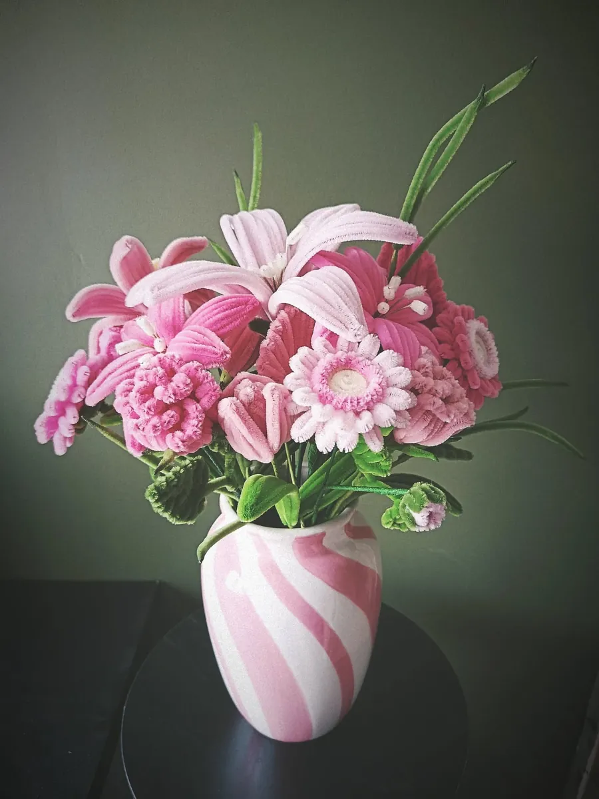

Une idée pour chaque occasion
Fête des mères
Pour la fête des mères, un bouquet que maman pourra garder : des fleurs façonnées à la main, emballées avec soin, et une carte de vœux pour lui écrire tout ce que vous ressentez.
Un bouquet qui dure
Les fleurs en fil chenille ne fanent pas : le bouquet de la fête des mères reste sur la table bien après le dimanche de la fête. Le bouquet rose tendre, le bouquet pastel aux perles ou les lys roses sont parmi les plus demandés.
Vous pouvez aussi créer le bouquet de ses rêves dans Votre bouquet à vous, fleur par fleur.
Pour les petites mains
Une fleur à l’unité, à 8 €, est un joli cadeau à offrir par un enfant : il choisit sa fleur et sa couleur, et écrit son message sur la carte.
Des idées de messages
- Bonne fête, maman !
- À la plus douce des mamans.
- Des fleurs éternelles, comme mon amour pour toi.
Mes idées de créations


Les autres occasions
Les fleurs de l’atelier
- Rose en fil chenille
- Tulipe en fil chenille
- Lys en fil chenille
- Gerbera en fil chenille
- Pavot et coquelicot en fil chenille
- Arum en fil chenille
- Hortensia en fil chenille
- Tournesol en fil chenille
- Muguet en fil chenille
- Lavande en fil chenille
- Jonquille en fil chenille
- Marguerite en fil chenille
- Pensée en fil chenille